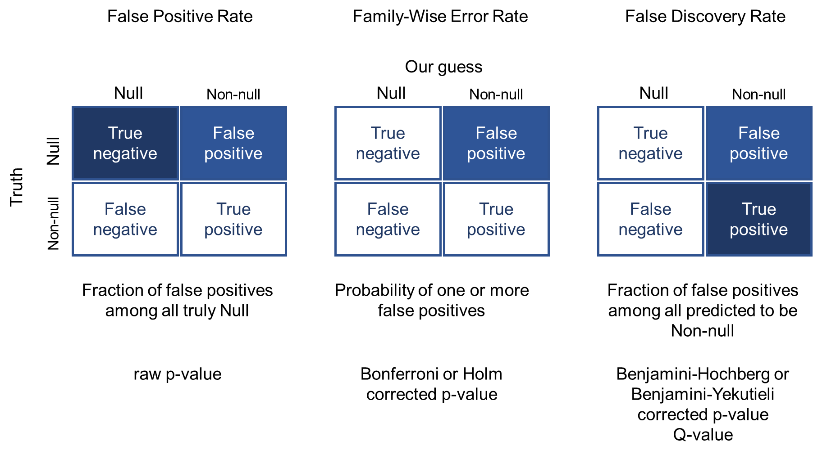

import pandas as pd
import numpy as np
from scipy.stats import norm
from statsmodels.stats.multitest import multipletestsMultiple Hypothesis Testing
Multiple hypothesis testing occurs when we repeatedly test models on a number of features, as the probability of obtaining one or more false discoveries increases with the number of tests. For example, genomic scientists often test whether any of the thousands of genes have activity significantly different than in an outcome of interest.
In this blog post, we will cover few of the popuar methods used to to account for multiple hypothesis testing by adjusting model p-values:
- False Positive Rate (FPR)
- Family-Wise Error Rate (FWER)
- False Discovery Rate (FDR)
and explain when it makes sense to use them.
This post can be summarized in the following image:

Create test data
We will create a simulated example to better understand how various manipulation of p-values can lead to different conclusions. To run this code, we need Python with pandas, numpy, scipy and statsmodels libraries installed.
For the purpose of this example, we start by creating a dataframe of 1000 features. 990 of which (99%) will have their values generated from a Normal distribution with mean = 0, called a Null model. (In a function norm.rvs() used below, mean is set using a loc argument.) The remaining 1% of the features will be generated from a Normal distribution mean = 3, called a Non-Null model. We will use these as representing interesting features that we would like to discover.
np.random.seed(42)
n_null = 9900
n_nonnull = 100
df = pd.DataFrame({
'hypothesis': np.concatenate((
['null'] * n_null,
['non-null'] * n_nonnull,
)),
'feature': range(n_null + n_nonnull),
'x': np.concatenate((
norm.rvs(loc=0, scale=1, size=n_null),
norm.rvs(loc=3, scale=1, size=n_nonnull),
))
})For each of the 1000 features, p-value is a probability of observing the value at least as large, if we assume it was generated from a Null distribution.
P-values can be calculating from cumulative distribution. Cumulative distribution from scipy.stats, is named norm.cdf() and represents the probability of obtaining a value equal to or less than the one observed. Then to calculate the p-value we calculate 1 - norm.cdf() to find the probability greater than the one observed:
df['p_value'] = 1 - norm.cdf(df['x'], loc = 0, scale = 1)
df| hypothesis | feature | x | p_value | |
|---|---|---|---|---|
| 0 | null | 0 | 0.496714 | 0.309695 |
| 1 | null | 1 | -0.138264 | 0.554984 |
| 2 | null | 2 | 0.647689 | 0.258593 |
| 3 | null | 3 | 1.523030 | 0.063876 |
| 4 | null | 4 | -0.234153 | 0.592567 |
| ... | ... | ... | ... | ... |
| 9995 | non-null | 9995 | 4.301102 | 0.000008 |
| 9996 | non-null | 9996 | 1.001655 | 0.158255 |
| 9997 | non-null | 9997 | 2.294683 | 0.010876 |
| 9998 | non-null | 9998 | 3.495766 | 0.000236 |
| 9999 | non-null | 9999 | 3.644388 | 0.000134 |
10000 rows × 4 columns
False Positive Rate
The first concept is called a False Positive Rate, and is defined as a fraction of null hypothesis that we flag as “significant” (also called Type I errors). The p-values we calculated earlier can be interpreted as a false positive rate by their very definition: they are probabilities of obtaining a value at least as large as a specified value, when we sample a null distribution.
For illustrative purposes, we will apply a common (magical) p-value threshold of 0.05, but any threshold can be used:
df['is_raw_p_value_significant'] = df['p_value'] <= 0.05
df.groupby(['hypothesis', 'is_raw_p_value_significant']).size()hypothesis is_raw_p_value_significant
non-null False 8
True 92
null False 9407
True 493
dtype: int64notice that out of our 9900 null hypotheses, 493 are flagged as “significant”. Therefore, a False Positive Rate is: FPR = 493 / (493 + 9940) = 0.053.
The main problem with FPR is that in a real scenario we do not a priori know which hypotheses are null and which are not. Then, the raw p-value on its own (False Positive Rate) can be of little use. In our case when the fraction of non-null features is very small, most of the features flagged as significant will be null, because there are many more of them. Specifically, out of 92 + 493 = 585 features flagged true (“positive”), only 92 are from our non-null distribution. That means that a majority or about 84% of reported significant features (493 / 585) are false positives!
So what can we do about this? There are two common methods of addressing this issue: instead of False Positive Rate, we can calculate Family-Wise Error Rate (FWER) or a False Discovery Rate (FPR). Each of these methods takes the set of raw, unadjusted, p-values as an input, and produces a new set of “adjusted p-values” as an output. These “adjusted p-values” represent estimates of upper bounds on FWER and FDR. They can be obtained from multipletests() function, which is part of the statsmodels Python library:
def adjust_pvalues(p_values, method):
return multipletests(p_values, method = method)[1]Family-Wise Error Rate
Family-Wise Error Rate is a probability of falsly rejecting one or more null hypothesis, i.e. flagging true Null as Non-null. In other words, this is a probability of obtaining one or more false positives.
When there is only one hypothesis being tested, this is equal to the raw p-value (false positive rate). However, the more hypotheses are tested, the more likely we are going to get one or more false positives. There are two popular ways to estimate FWER: Bonferroni and Holm corrections.
Bonferroni correction
One of the most popular method for correcting for multiple hypothesis testing is a Bonferroni procedure. The reason this method is popular is because it is very easy to calculate, even by hand. This procedure multiplies p-values by the total number of tests performed, or sets them to 1 if this would make that exceed it.
df['p_value_bonf'] = adjust_pvalues(df['p_value'], 'bonferroni')
df.sort_values('p_value_bonf').head(20)| hypothesis | feature | x | p_value | is_raw_p_value_significant | p_value_bonf | |
|---|---|---|---|---|---|---|
| 9907 | non-null | 9907 | 5.322609 | 5.114466e-08 | True | 0.000511 |
| 9942 | non-null | 9942 | 5.022174 | 2.554492e-07 | True | 0.002554 |
| 9943 | non-null | 9943 | 4.831177 | 6.786409e-07 | True | 0.006786 |
| 9941 | non-null | 9941 | 4.801528 | 7.872958e-07 | True | 0.007873 |
| 9976 | non-null | 9976 | 4.674271 | 1.475000e-06 | True | 0.014750 |
| 9964 | non-null | 9964 | 4.589147 | 2.225301e-06 | True | 0.022253 |
| 9974 | non-null | 9974 | 4.515318 | 3.161090e-06 | True | 0.031611 |
| 9990 | non-null | 9990 | 4.433625 | 4.633087e-06 | True | 0.046331 |
| 9909 | non-null | 9909 | 4.414029 | 5.073215e-06 | True | 0.050732 |
| 9916 | non-null | 9916 | 4.316007 | 7.943832e-06 | True | 0.079438 |
| 9995 | non-null | 9995 | 4.301102 | 8.497538e-06 | True | 0.084975 |
| 9949 | non-null | 9949 | 4.300625 | 8.515838e-06 | True | 0.085158 |
| 9994 | non-null | 9994 | 4.194214 | 1.369094e-05 | True | 0.136909 |
| 9908 | non-null | 9908 | 4.061817 | 2.434616e-05 | True | 0.243462 |
| 9923 | non-null | 9923 | 4.046955 | 2.594416e-05 | True | 0.259442 |
| 9904 | non-null | 9904 | 3.970488 | 3.586272e-05 | True | 0.358627 |
| 9911 | non-null | 9911 | 3.967932 | 3.624951e-05 | True | 0.362495 |
| 9900 | non-null | 9900 | 3.934655 | 4.165819e-05 | True | 0.416582 |
| 2895 | null | 2895 | 3.926238 | 4.314244e-05 | True | 0.431424 |
| 9950 | non-null | 9950 | 3.867805 | 5.490961e-05 | True | 0.549096 |
Holm correction
Holm’s correction is more powerful than Bonferroni’s correction, and its difference is that the p-values are not all multiplied by the total number of tests (here, 10,000). Instead, each sorted p-value is multiplied progressively by a decreasing sequence 10,000, 9,999, 9,998, 9,997, …, 3, 2, 1.
df['p_value_holm'] = adjust_pvalues(df['p_value'], 'holm')
df.sort_values('p_value_holm').head(20)| hypothesis | feature | x | p_value | is_raw_p_value_significant | p_value_bonf | p_value_holm | |
|---|---|---|---|---|---|---|---|
| 9907 | non-null | 9907 | 5.322609 | 5.114466e-08 | True | 0.000511 | 0.000511 |
| 9942 | non-null | 9942 | 5.022174 | 2.554492e-07 | True | 0.002554 | 0.002554 |
| 9943 | non-null | 9943 | 4.831177 | 6.786409e-07 | True | 0.006786 | 0.006785 |
| 9941 | non-null | 9941 | 4.801528 | 7.872958e-07 | True | 0.007873 | 0.007871 |
| 9976 | non-null | 9976 | 4.674271 | 1.475000e-06 | True | 0.014750 | 0.014744 |
| 9964 | non-null | 9964 | 4.589147 | 2.225301e-06 | True | 0.022253 | 0.022242 |
| 9974 | non-null | 9974 | 4.515318 | 3.161090e-06 | True | 0.031611 | 0.031592 |
| 9990 | non-null | 9990 | 4.433625 | 4.633087e-06 | True | 0.046331 | 0.046298 |
| 9909 | non-null | 9909 | 4.414029 | 5.073215e-06 | True | 0.050732 | 0.050692 |
| 9916 | non-null | 9916 | 4.316007 | 7.943832e-06 | True | 0.079438 | 0.079367 |
| 9995 | non-null | 9995 | 4.301102 | 8.497538e-06 | True | 0.084975 | 0.084890 |
| 9949 | non-null | 9949 | 4.300625 | 8.515838e-06 | True | 0.085158 | 0.085065 |
| 9994 | non-null | 9994 | 4.194214 | 1.369094e-05 | True | 0.136909 | 0.136745 |
| 9908 | non-null | 9908 | 4.061817 | 2.434616e-05 | True | 0.243462 | 0.243145 |
| 9923 | non-null | 9923 | 4.046955 | 2.594416e-05 | True | 0.259442 | 0.259078 |
| 9904 | non-null | 9904 | 3.970488 | 3.586272e-05 | True | 0.358627 | 0.358089 |
| 9911 | non-null | 9911 | 3.967932 | 3.624951e-05 | True | 0.362495 | 0.361915 |
| 9900 | non-null | 9900 | 3.934655 | 4.165819e-05 | True | 0.416582 | 0.415874 |
| 2895 | null | 2895 | 3.926238 | 4.314244e-05 | True | 0.431424 | 0.430648 |
| 9950 | non-null | 9950 | 3.867805 | 5.490961e-05 | True | 0.549096 | 0.548053 |
We can verify this ourselves: the last 20th p-value on this output is multiplied by 9981: 5.490961e-05 * 9981 = 0.548053. Holm’s correction is also the default method for adjusting p-values in p.adjust() function in R language.
False Discovery Rate
Benjamini-Hochberg
5.114466e-08 * 10005.114466e-05df['p_value_bh'] = adjust_pvalues(df['p_value'], 'fdr_bh')
df.sort_values('p_value_bh').head(40)| hypothesis | feature | x | p_value | is_raw_p_value_significant | p_value_bonf | p_value_holm | p_value_bh | |
|---|---|---|---|---|---|---|---|---|
| 9907 | non-null | 9907 | 5.322609 | 5.114466e-08 | True | 0.000511 | 0.000511 | 0.000511 |
| 9942 | non-null | 9942 | 5.022174 | 2.554492e-07 | True | 0.002554 | 0.002554 | 0.001277 |
| 9941 | non-null | 9941 | 4.801528 | 7.872958e-07 | True | 0.007873 | 0.007871 | 0.001968 |
| 9943 | non-null | 9943 | 4.831177 | 6.786409e-07 | True | 0.006786 | 0.006785 | 0.001968 |
| 9976 | non-null | 9976 | 4.674271 | 1.475000e-06 | True | 0.014750 | 0.014744 | 0.002950 |
| 9964 | non-null | 9964 | 4.589147 | 2.225301e-06 | True | 0.022253 | 0.022242 | 0.003709 |
| 9974 | non-null | 9974 | 4.515318 | 3.161090e-06 | True | 0.031611 | 0.031592 | 0.004516 |
| 9990 | non-null | 9990 | 4.433625 | 4.633087e-06 | True | 0.046331 | 0.046298 | 0.005637 |
| 9909 | non-null | 9909 | 4.414029 | 5.073215e-06 | True | 0.050732 | 0.050692 | 0.005637 |
| 9995 | non-null | 9995 | 4.301102 | 8.497538e-06 | True | 0.084975 | 0.084890 | 0.007097 |
| 9916 | non-null | 9916 | 4.316007 | 7.943832e-06 | True | 0.079438 | 0.079367 | 0.007097 |
| 9949 | non-null | 9949 | 4.300625 | 8.515838e-06 | True | 0.085158 | 0.085065 | 0.007097 |
| 9994 | non-null | 9994 | 4.194214 | 1.369094e-05 | True | 0.136909 | 0.136745 | 0.010531 |
| 9908 | non-null | 9908 | 4.061817 | 2.434616e-05 | True | 0.243462 | 0.243145 | 0.017296 |
| 9923 | non-null | 9923 | 4.046955 | 2.594416e-05 | True | 0.259442 | 0.259078 | 0.017296 |
| 9911 | non-null | 9911 | 3.967932 | 3.624951e-05 | True | 0.362495 | 0.361915 | 0.021323 |
| 9904 | non-null | 9904 | 3.970488 | 3.586272e-05 | True | 0.358627 | 0.358089 | 0.021323 |
| 9900 | non-null | 9900 | 3.934655 | 4.165819e-05 | True | 0.416582 | 0.415874 | 0.022707 |
| 2895 | null | 2895 | 3.926238 | 4.314244e-05 | True | 0.431424 | 0.430648 | 0.022707 |
| 9950 | non-null | 9950 | 3.867805 | 5.490961e-05 | True | 0.549096 | 0.548053 | 0.026178 |
| 209 | null | 209 | 3.852731 | 5.840373e-05 | True | 0.584037 | 0.582811 | 0.026178 |
| 9972 | non-null | 9972 | 3.845273 | 6.020908e-05 | True | 0.602091 | 0.600766 | 0.026178 |
| 9937 | non-null | 9937 | 3.858270 | 5.709613e-05 | True | 0.570961 | 0.569819 | 0.026178 |
| 9913 | non-null | 9913 | 3.795864 | 7.356513e-05 | True | 0.735651 | 0.733959 | 0.030652 |
| 9955 | non-null | 9955 | 3.697051 | 1.090593e-04 | True | 1.000000 | 1.000000 | 0.040320 |
| 9962 | non-null | 9962 | 3.688496 | 1.127918e-04 | True | 1.000000 | 1.000000 | 0.040320 |
| 9928 | non-null | 9928 | 3.688260 | 1.128966e-04 | True | 1.000000 | 1.000000 | 0.040320 |
| 9971 | non-null | 9971 | 3.701390 | 1.072108e-04 | True | 1.000000 | 1.000000 | 0.040320 |
| 9932 | non-null | 9932 | 3.656899 | 1.276426e-04 | True | 1.000000 | 1.000000 | 0.040610 |
| 9914 | non-null | 9914 | 3.654388 | 1.288980e-04 | True | 1.000000 | 1.000000 | 0.040610 |
| 9999 | non-null | 9999 | 3.644388 | 1.340142e-04 | True | 1.000000 | 1.000000 | 0.040610 |
| 9958 | non-null | 9958 | 3.650668 | 1.307798e-04 | True | 1.000000 | 1.000000 | 0.040610 |
| 9992 | non-null | 9992 | 3.662169 | 1.250445e-04 | True | 1.000000 | 1.000000 | 0.040610 |
| 9906 | non-null | 9906 | 3.636553 | 1.381553e-04 | True | 1.000000 | 1.000000 | 0.040634 |
| 9973 | non-null | 9973 | 3.603781 | 1.568104e-04 | True | 1.000000 | 1.000000 | 0.044803 |
| 9929 | non-null | 9929 | 3.547739 | 1.942765e-04 | True | 1.000000 | 1.000000 | 0.053966 |
| 6891 | null | 6891 | 3.529055 | 2.085231e-04 | True | 1.000000 | 1.000000 | 0.055525 |
| 9982 | non-null | 9982 | 3.525937 | 2.109934e-04 | True | 1.000000 | 1.000000 | 0.055525 |
| 9965 | non-null | 9965 | 3.501129 | 2.316455e-04 | True | 1.000000 | 1.000000 | 0.059088 |
| 9998 | non-null | 9998 | 3.495766 | 2.363519e-04 | True | 1.000000 | 1.000000 | 0.059088 |
pval_sorted_df = df[['hypothesis', 'feature', 'p_value', 'p_value_bh']].sort_values('p_value_bh')
pval_sorted_df['rank'] = range(len(pval_sorted_df))
pval_sorted_df.head(20)| hypothesis | feature | p_value | p_value_bh | rank | |
|---|---|---|---|---|---|
| 9907 | non-null | 9907 | 5.114466e-08 | 0.000511 | 0 |
| 9942 | non-null | 9942 | 2.554492e-07 | 0.001277 | 1 |
| 9941 | non-null | 9941 | 7.872958e-07 | 0.001968 | 2 |
| 9943 | non-null | 9943 | 6.786409e-07 | 0.001968 | 3 |
| 9976 | non-null | 9976 | 1.475000e-06 | 0.002950 | 4 |
| 9964 | non-null | 9964 | 2.225301e-06 | 0.003709 | 5 |
| 9974 | non-null | 9974 | 3.161090e-06 | 0.004516 | 6 |
| 9990 | non-null | 9990 | 4.633087e-06 | 0.005637 | 7 |
| 9909 | non-null | 9909 | 5.073215e-06 | 0.005637 | 8 |
| 9995 | non-null | 9995 | 8.497538e-06 | 0.007097 | 9 |
| 9916 | non-null | 9916 | 7.943832e-06 | 0.007097 | 10 |
| 9949 | non-null | 9949 | 8.515838e-06 | 0.007097 | 11 |
| 9994 | non-null | 9994 | 1.369094e-05 | 0.010531 | 12 |
| 9908 | non-null | 9908 | 2.434616e-05 | 0.017296 | 13 |
| 9923 | non-null | 9923 | 2.594416e-05 | 0.017296 | 14 |
| 9911 | non-null | 9911 | 3.624951e-05 | 0.021323 | 15 |
| 9904 | non-null | 9904 | 3.586272e-05 | 0.021323 | 16 |
| 9900 | non-null | 9900 | 4.165819e-05 | 0.022707 | 17 |
| 2895 | null | 2895 | 4.314244e-05 | 0.022707 | 18 |
| 9950 | non-null | 9950 | 5.490961e-05 | 0.026178 | 19 |